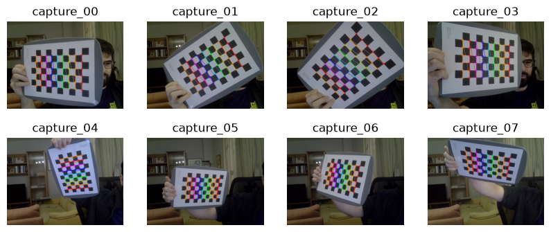
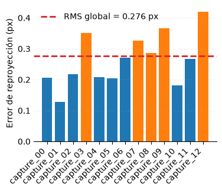
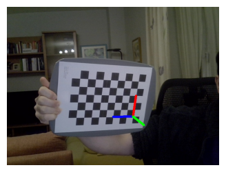
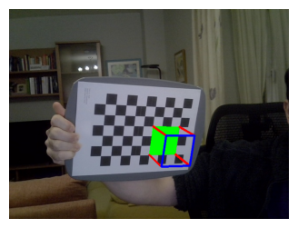

3 Calibración de la cámara
3.1 Ejercicio 3.1
Para realizar la calibración de la cámara, he utilizado un patrón de tablero de ajedrez obtenido de las plantillas que ofrece OpenCV. He impreso el patrón y lo he fijado a una superficie rígida para minimizar posibles deformaciones del papel que pudiesen afectar a la calibración de la cámara.
Para la captura de la imágenes he implementado un pequeño programa CLI que puede ejecutar con el comando uv run miia-pec1 capture, que permite visualizar en tiempo real las esquinas detectadas para facilitar la captura del tablero en diferentes posiciones y orientaciones generando imágenes válidas para la calibración.
En Figura 3.1 se muestran las imágenes seleccionadas para el proceso de calibración.
Posteriormente, el comando uv run miia-pec calibrate realiza la calibración de la cámara. A partir de las correspondencias entre los puntos del patrón y sus proyecciones en las imágenes, estima los parámetros de la cámara y los coeficientes de distorsión.
Como se observa en Figura 3.2, el algoritmo identifica las esquinas interiores del tablero de ajedrez, que se utilizan como puntos de referencia para calcular los parámetros de calibración.

En Tabla 3.1 se muestran los parámetros obtenidos durante la calibración, la matriz intrínseca \(\mathbf{K}\) y los coeficientes de distorsión \(\mathbf{D}\)
La matriz intrínseca \(\mathbf{K}\) recoge los parámetros que describen la proyección de la cámara. En particular, las distancias focales expresadas en píxeles son \(f_x \approx 534.16\) y \(f_y \approx 534.25\), mientras que el punto principal se encuentra en \((c_x,c_y)\approx(341.71,232.05)\).
El vector de distorsión \(\mathbf{D}\) contiene los coeficientes utilizados para modelar las distorsiones radiales y tangenciales de la lente. En el modelo habitual de cinco coeficientes de OpenCV, estos se ordenan como \((k_1,k_2,p_1,p_2,k_3)\).
Estos parámetros permiten corregir la distorsión de las imágenes y realizar proyecciones geométricas más precisas.
| Parámetro | Valor |
|---|---|
| Matriz intrínseca \(K\) | \(\begin{bmatrix}701.7948 & 0.0000 & 316.8115 \\ 0.0000 & 702.0579 & 236.2497 \\ 0.0000 & 0.0000 & 1.0000\end{bmatrix}\) |
| Distorsión \(D\) | \(\left(0.0183, 0.6575, -0.0077, 0.0025, -1.8116\right)\) |
3.1.1 Evaluación del error de calibración
Tras completar la calibración, se analiza el error de reproyección, que mide la diferencia entres las posiciones de las esquinas detectadas y las estimadas utilizando los parámetros de calibración obtenidos.
En Figura 3.3 se puede observar el error de calibración para cada imagen, junto con el error de calibración global RMS.
Los resultados muestran errores relativamente reducidos, con pequeñas diferencias entre las imágenes utilizadas. El error RMS global es aproximadamente de 0,276 píxeles, lo que indica una buena correspondencia entre las observaciones y el model estimado.
Un RMS bajo no garantiza una calibración perfecta, es importante que las imágenes cubran diferentes orientaciones y regiones del sensor.

En Figura 3.4 se compara la imagen original con su versión corregida. Aunque las diferencias son sutiles, se aprecia una ligera rectificación de las líneas y los bordes, especialmente en las zonas periféricas de la imagen.


3.2 Ejercicio 3.2
¿Como podemos estimar la pose de una un objeto respecto a la cámara?
Partimos de unos puntos 3D conocidos del objeto y detectamos sus correspondientes posiciones 2D en la imagen.
| Puntos 3D conocidos | Posiciones 2D en la imagen |
|---|---|
| \(\left(0.0000, 0.0000, 0.0000\right)\) | \(\left(380.1252, 332.5765\right)\) |
| \(\left(1.0000, 0.0000, 0.0000\right)\) | \(\left(360.6099, 333.1312\right)\) |
| \(\left(2.0000, 0.0000, 0.0000\right)\) | \(\left(340.7096, 333.4769\right)\) |
| \(\left(3.0000, 0.0000, 0.0000\right)\) | \(\left(320.2885, 333.8613\right)\) |
| \(\left(4.0000, 0.0000, 0.0000\right)\) | \(\left(299.3304, 334.4000\right)\) |
A partir de las correspondencias entre los puntos 3D y 2D, la matriz intrínseca y los coeficientes de distorsión de la cámara, cv.solvePnP() permite estimar la rotación y la traslación del objeto respecto a la cámara. Estos parámetros se calculan buscando que las proyecciones de los puntos 3D se ajusten lo mejor posible a los puntos 2D detectados. Esta transformación se ilustra en la Figura 3.5.


Este procedimiento podría aplicarse a la cabeza de una persona, sería necesario un modelo facial 3D de referencia junto con el sistema capaz de detectar las posiciones 2D de puntos significativos. A partir de las correspondencias, cv.solvePnP() permitiría estimar la orientación de la cabeza respecto a la cámara, como resume la Figura 3.7.
%%{init: {"flowchart": {"nodeSpacing": 10, "rankSpacing": 15}, "themeVariables": {"fontSize": "14px"}}}%%
flowchart TD
A["Cámara calibrada<br/>K y distorsión"]
B["Modelo facial 3D"]
C["Puntos faciales 2D"]
D["solvePnP<br/>Estimación de R y t"]
E["Orientación de cabeza"]
F["Detección del iris"]
G["Dirección ocular relativa a la cabeza"]
H["Combinar orientación de cabeza y ojo"]
I["Dirección estimada de la mirada"]
A --> D
B --> D
C --> D
D --> E
C --> F
F --> G
E --> H
G --> H
H --> I
Sin embargo, la orientación de la cabeza no tiene por qué coincidir con la orientación de la mirada, ya que los ojos tienen movilidad independiente. Para estimar la mirada con mayor precisión es necesario detectar los iris y estimar la orientación de los ojos respecto a la cabeza.
Finalmente, combinando la rotación de la cabeza con la dirección ocular estimada, se podría obtener una aproximación de la dirección tridimensional de la mirada respecto a la cámara.